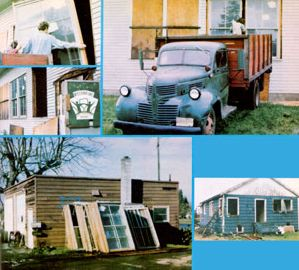

There's good money to be made in tearing down old buildings and selling reusable materials.
A few years ago-acting pretty much on impulse-I made a deal with the owner of a small condemned house, offering to clear his lot if I could keep the materials to use in a home remodeling project. However, as I tore the old place apart, a number of people stopped and asked to buy the various boards and fixtures. Soon all the salvage from that structure was sold . .. and I decided to try to find another demolition job. After all, I still needed materials myself . . . I enjoyed the work . . . and I saw an opportunity to bring in additional cash.
It soon became apparent that many landowners and construction companies were delighted at the chance to pay me to dismantle their buildings, in order to avoid the usually high prices charged by conventional demolition crews. In fact, on the fourth house I took down, I cleared $325 plus the profit from salvage sales . . . and I knew I wanted to stay in the business. Maybe you'd like to try it too.
PRELIMINARY PREPARATIONS
Before I could call myself a professional dismantler, though, I had to rent a storage yard and garage . . . the upstairs of which I converted into a small apartment. (Since a young operation will usually be small, and because the inventory sells so quickly, a 30' X 30' storage area is plenty large. However, you will need room to clean and sort your wares, so the more interior space you have, the better.)
I did my hauling with a small pickup truck and trailer for my first two jobs, but soon bought an old (1941) 2-1/2-ton vehicle with a 14-foot flatbed. My tool inventory consists of a couple of crowbars, a steelshanked hammer, assorted screwdrivers, wire and tin cutters, a small bow saw, a pipe wrench, a magnet (to pick up nails), and a couple of brushes and scraping tools. It's best not to rely on heavy equipment, but rather to work with small tools in order to remove old boards and dismantle fixtures with a minimum of damage.
I discovered at once that good, sturdy work clothes were necessary, too. Before you do any demolition work, be sure to buy some strong, steel-toed shoes with thick soles . . . since you'll often be walking around (and on) nails and shattered glass. Likewise, heavy leather gloves and a helmet will shield your hands and head, and coveralls will both protect your clothing and provide lots of pocket space.
It was also necessary for me to obtain a contractor's license . . . but that wasn't unduly difficult. The required qualifications vary from one locality to another, but most cities and counties demand that an applicant have liability insurance (I needed $250,000 worth, which-at that time-cost me $50 a year) and a surety bond (I paid a bonding agency about $150 for a $2,000 bond). Once those items were taken care of, the fee for the contractor's permit itself came to about $50 a year.
To announce my services to the community, I had some posters and business cards printed, and nailed up a homemade sign on my garage door. Such advertising serves chiefly to attract customers for the salvaged materials, however . . . I have to find the dismantling jobs on my own.
A HOUSE SCOUT
It's relatively easy to locate homes in need of demolition. Just drive around and look for abandoned and condemned buildings, and-after you spot one that looks empty and ready for destruction-check the city or county tax records to find the owner. I've discovered that many people are glad to pay me for dismantling ... since I ask about one-quarter of the price that big companies charge (although the "pros" will take down a house in a couple of days as opposed to the several weeks I generally need).
I also sometimes find work by checking the local or regional contractor's publications for upcoming jobs that will require the removal of any structures. The builders are often glad to save on demolition costs by hiring me.
The contract for my dismantling jobs is pretty simple and straightforward. I ask about $500 to tear down a medium-sized house, and guarantee that the job will be done in 21 days. A written contract should also specify whether the foundation and trees on the property are to be removed. Furthermore, I generally offer a 7% discount if the customer pays one-third of the contract price in advance. (I don't miss the percentage much, since the money to be made in house removal is usually insignificant compared to my income from salvage sales.)
Finally, for each job, the city or county government will probably require a demolition permit costing a few dollars. You're eligible to buy these once you have a contractor's permit . . . but you can ask each property owner to provide it for you, if you prefer.
THE ART OF DECONSTRUCTION
I learned the art of deconstruction by reading a few early twentieth century carpentry manuals to see how old houses were put together. It was then fairly simple to develop a systematic process for taking them down.
The first step is to remove all furniture and loose materials from the structure's interior . . . then take out all window glass and exposed electrical and plumbing fixtures. (The latter items can usually be unscrewed and lifted off, or-in some cases-pried out.)
If there's a chimney, it should be dismantled to the roof line at this point. The bricks are often easily lifted off by hand, but it's a good idea to use care when doing so, since those that are in good condition can be sold-after the mortar is cleaned off-for 10 to 18 cents apiece.
Once that's done, the interior finished wood (floors and molding) should be pried loose gently with a crowbar, in order to cause as little damage to it as possible. Next-working just as carefully-take down the interior walls. (When removing any lumber, simply figure out the order in which the boards were put together and then reverse it. It's also a good idea to haul all materials away to the salvage yard as you go along, to make sure you don't accumulate an unsightly, and dangerous, pile of junk at the work site.) After the interior walls are out, the roof shingles can be torn off rather quickly, because they generally aren't worth saving.
The next step is to remove the horizon tal roof boards (again, using a crowbar) and then take off the roof skeleton piece by piece. Sometimes the ceiling headers (the structural beams that join the exterior walls at the top) have to come off with the roof, but-unless those members are integrally connected with the roof board-sit's best to leave them on to hold the walls in place while you dismantle the rest of the house.
When the roof skeleton is gone, carefully crowbar the exterior walls away. Then you can take down the rest of the chimney, tossing the bricks out between the joists onto grass or soft ground to avoid damaging them.
The rest of the deconstruction process is quite clear-cut: Dismantle the ceiling headers, push out the wall joists, remove the structural subfloor, lift and haul away the floor beams . . . and the building will be gone!
If the foundation has to be removed, dig it up with a rented backhoe and truck the material to the dump. The rubble can be salvaged for use as filler in new cement projects, but few people like to use it . . . so the job is usually little more than extra work. I avoid including foundation removal in my contracts whenever I can.
CLEAN UP FOR CASH!
Once the owner is satisfied with the clearing of the site, the materials you've collected must be cleaned and sorted. Pull the nails out of all the wood, then organize the lumber according to size ... grouping dimensional boards in separate piles of 2 X 4's, 2 X 6's, 2 X 12's, etc., and making other stacks of different sizes of plywood.
Be sure to gather up all nails and other "junk" metal, too, since scrap dealers will purchase such material for $1.00 to $1.50 per hundred pounds. Furthermore, if you scrape the insulation off any electrical wires that you accumulate, you can sell the copper . . . for 45 to 60 cents a pound.
The point is to clean up and save everything usable. For example, any plumbing and electrical fixtures in decent working order (or in at least fixable condition) can be sold . . . and some people even like to turn otherwise useless pipes into tables or bookshelves.
WHY SALVAGE SELLS
Today's demand for salvage is high, primarily because building materials used in pre-World War II houses are-in most cases-of higher quality than those available now. Yesterday's boards came from old-growth timber stands, and were dried in lumberyards for as long as two or three years before being sold. From the early 1940's on, though, processed planks have been kiln-dried, and are planed to smooth out the knots that are more prevalent in new-growth timber.
Consequently, 2 X 4's are now actually only about 1-1/2" X 3-1/2" in size ... and when lumber is purchased in quantity, such shrinkage can add up to quite a loss of structural mass! (The difference in dimensions must, of course, be taken into account when planning any project using older wood.) On top of that, many builders consider rough-hewn or weathered boards particularly attractive . . . and people who want to remodel the interiors of their old houses find that salvaged material matches the existing wood much better than does new lumber. Older plumbing and electrical fixtures, too, are often of better quality than are new ones. Toilet seats, for example, were formerly made of wood or porcelain instead of plastic.
Finally, salvage is much less expensive than new material. I charge 10d to 25 cents a board foot for old air-dried planks . . . and the demand for them is so high that I could sell ten times as many as I have available.
SALVAGE STORE MANAGEMENT
When working in the salvage store, I find it both easy and fun to help people design a project around the material I have on hand . . . and I'd like more oppor tunity to tackle that part of my business. However, in order to have time to do the deconstruction work and clean the resulting salvage, I hire daytime sales help, and can tend the place myself only in the late afternoons and early evenings.
Because I want to keep my pricing very fair, I charge no more than 50% of the cost of similar new materials. Actual fees depend on both the condition of the salvage and the quantity purchased. Standard bathroom sinks, as an example, bring $10 to $15, and light fixtures start at $1.00.
My business has been in full operation for a year and a half now, and grosses $3,000 to $4,000 a month. Of course, my monthly expenses vary. If I need assistance to tear down a building, for instance, I pay my temporary help on a piecework basis, using an agreed-upon figure per 1,000 board feet of lumber removed. Then there's the cost of tool and truck maintenance, clothing, garage rental, utilities, salespeople's wages, insurance, bonding, and licensing fees.
And of course the more money I bring in, the more business improvements I intend to make . . . including putting a couple of big, sturdy signs on my store, and advertising in the local Yellow Pages under three headings: "Building Materials", "Salvage", and "Demolition".
But even though both my expenses and my profits are irregular at this point, my income has been more than adequate. And, most important, I'm self-employed and doing ecologically sound work that I really enjoy!
|
 |
|
|